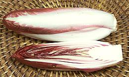

Magnolias

SAFARI
Users
Chicory - Endive
[Asteraceae Cichorium]
Amazonian Chicory[Eryngium foetidum]
Catalogna Chicory[Italian Dandelion, Cutting Chicory, C. intybus]
A mildly bitter chicory popular in Italy and widely available in the
USA. There are also cultivars with red stems, and sometimes white
ones will show red streaks. Chicory is generally used raw to pep up
salads with fairly heavy dressings, but can also be cooked and will then
be milder. The photo specimen was 16 inches long and weighed 13 ounces.
Chicory Root][C. intybus var. sativum
Chicory Root has long been an adulterant in coffee, and sometimes a
substitute. In East Germany, Mischkaffee, a mixture of chicory,
sugar beet and rye, was used during a coffee shortage before the fall
of the Berlin Wall. Chicory root is used industrially for extracting
inulin, now being promoted as a "prebiotic" in the health food market.
Some beer brewers use roasted chickory to make their stout more
"stout". Photo by
Rasbak
at nl.wikipedia (seriously color balanced), licensed under Creative
Commons
Attribution-ShareAlike v3.0 Unported - attribution required
.
Belgian Endive - White[Witloof, French Endive, Cichorium intybus]
This very bitter chicory is pulled from the field and the green top cut
off. Replanted in darkness the roots grow new leaves which lack green
chlorophyll and are also much less bitter. This process explains the
rather high price, but the flavor/texture combination just can't be
found elsewhere and is essential to some recipes. The photo specimen
was 5 inches long and weighed 4-3/4 ounces.
Belgian Endive - Red Eager to entertain (and pick up a little yuppie cash), California growers are now marketing a red variety of Belgian Endive. I found the taste indistinguishable from the regular white but the heads were smaller, looser and more expensive. Use it if the color is important to you. The photo specimens were 5 inches long and weighed 2-1/4 ounces each. Curly Endive / Frisée[Chicorée Frisée (France); Cichorium endivia var crispum]
A plant from India (Cichorium endivia) valued as a salad green. The
Curly variety has fairly narrow leaves with ruffled edges while on the
Frisée variety the leaf is both curly and very deeply cut making it
quite frizzy. Of course there are many cultivars ranging from one extreme
to the other.
Escarole[Batavian Endive, Bavarian Endive, Wide leaf Endive; Cichorium endivia var latifolia]
Escarole is less bitter than most chicories and has broad light green
leaves and a very flat head. It is commonly used as a salad green but
more mature heads may be cooked as a green side dish.
The photo specimen was 13 inches across and weighed 13 ounces.
Radicchio[Cichorium intybus]
A moderately bitter chicory that looks like a head of lettuce in the
field. In Italy they have also an all white version but in the US the
spherical red and white Radicchio di Chioggia variety is most common
but an elongated red and white Treviso variety
that looks like a big red Belgian endive is also seen. This is a
fairly expensive lettuce because of the production method. In the
field they are green. To make them purely red and white they are
pulled from the ground and put in water in a dark room until the
chlorophyll has faded from lack of light. This is labor and capital
intensive and a lot of outer leaves are lost in the process resulting
in the high price. The larger of the photo specimens was 4 inches
diameter and weighed 9-1/2 ounces.
Details & Cooking.
Radicchio Treviso[Cichorium intybus]
This is simply an elongated variety of the regular round
Radicchio di Chioggia. It tastes the same and
can be used the same unless leaf shape is important to your
application, but it's likely to be even more expensive. The photo
specimens was 7 inches long, 2-3/4 inches diameter and weighed 7
ounces.
Details & Cooking.
|
Lettuce
[Lactuca sativa] The first depiction of lettuce is from Egypt just under 4000 years ago, but it had been in use there in much earlier times. Egyptian lettuce was similar to our wild lettuce, and similarly reputed to have opiate (and aphrodisiac) properties. Mature lettuce "bolts", sending up a central stalk with many branches holding small dandelion-like flowers. It becomes more bitter and opiate-like when it bolts. Lettuce is a significant source of Lithium.
Butter Lettuce[Butterhead, Boston, Bib or Limestone]
These are very tender loose leaf lettuces often packed in individual
plastic containers to protect them from damage. Of the two main
varieties, Bib Lettuce is the smaller and considered the more flavorful,
but Boston Lettuce is a suitable substitute. Packages I've seen in
Southern California do not use either designation but simply call the
contents "Butter Lettuce". The package often includes roots and a
hydroponic growing matrix to extend shelf life.
Green Leaf LettuceGreen Leaf is too tender to be a good industrial product but it's a very fine base for quality salads. Plenty of lettuce flavor with very moderate bitterness and good color. The photo specimen, squished a bit flat in shipping, as they always are, was 14 inches wide, 10 inches from stem to tip and weighed 13 ounces. Iceberg Lettuce[Crisphead Lettuce] Crisphead is actually the correct name, but nobody calls it that. This head lettuce is the darling of the lettuce industry and the fast food chains. It's easy to handle and stands up well to processing and shipping abuse. The fast food people like it because it's easy to shred, bulks up a salad well and stays crisp and bulky for quite a while after shredding. This lettuce was originally (and still is) grown in Salinas, California. It was put on trains, packed with ice and shipped as far as Maine year round, thus called "iceberg lettuce". It was very much welcomed during New England winters. Crisphead lettuce contains a lot of water and is 1/5th or less
nutritious as loose leaf lettuce. It has rather little lettuce flavor
or bitterness but can be useful for recipes that call for lettuce
wedges and such or where texture is more important than flavor or
nutrition. It's also easy to store in the fridge compared to leaf
lettuce. The photo specimen (left), a medium size one, was 5-1/4
inches diameter and weighed 1 pound 9-5/8 ounces.
Mâche LettuceNot actually lettuce, but a member of the
Valerian family.
Red Leaf Lettuce Very similar to Green Leaf Lettuce except for the
color. For taste and texture the two are interchangeable. The color is
caused by anthocyanin pigments which are the same antioxidants found
in red cabbage and red wine.
Very similar to Green Leaf Lettuce except for the
color. For taste and texture the two are interchangeable. The color is
caused by anthocyanin pigments which are the same antioxidants found
in red cabbage and red wine.
Romaine Lettuce[Cos Lettuce]
The second most common lettuce in America after Iceberg
and the sturdiest of the leaf lettuces. It's shape and stiffness make it
relatively easy to handle but it does have quite a bit more lettuce flavor
than iceberg does. It is called for by many recipes where the leaf shape
and stiffness is desirable. The photo specimen was 13 inches high. It is
often used as a foundation layer on a platter with the featured items
placed over it.
Ruby LettucePretty much the same as Red Leaf Lettuce except for being all deep red with almost no green. For taste and texture the two are interchangeable. The color is caused by anthocyanin pigments which are the same antioxidants found in red cabbage and red wine. A-Choy[Taiwan Lettuce, Chinese Lettuce, Sword Lettuce; Yu Mai Tsai (China)]
This is the only common leaf lettuce in China, and is actually the
crown leaves from Stem Lettuce (see next paragraph). It is popular in
stir fries in Taiwan, and is always cooked - raw salads are not eaten
in China due to unsanitary growing conditions. This lettuce is now
widely available in markets serving a Chinese community - well, it is
here in Southern California anyway. It is much like a romaine
lettuce, but more bitter
Stem Lettuce [Celtuce, Celery Lettuce, Asparagus Lettuce, A-Choy Sum, Chinese
Lettuce; Wosun, Woju (China); L. sativa var asparagina
alt var augustana, var angustata]
[Celtuce, Celery Lettuce, Asparagus Lettuce, A-Choy Sum, Chinese
Lettuce; Wosun, Woju (China); L. sativa var asparagina
alt var augustana, var angustata]
This lettuce is grown mainly for its stem, which is peeled and sliced
or diced and used in stir fries. It is also often pickled. The flavor
is fairly mild, much like a slightly bitter cucumber, so it's usually
paired with stronger flavored items. The photo specimens were about
17 inches long (not counting leaves), 1.6 inches diameter and weighed
about 8 ounces each. The form shown with a crown of leaves is how it
is generally sold, but you'll notice the tip with the young more
tender leaves has been removed. It is sold separately as A-Choy (see
above). The older leaves still attached are like Romaine leaves but
tougher and more bitter, but they do stand up better to cooking. The
Chinese do not eat raw greens for reasons you'd probably rather not
dwell on.
Details and Cooking.
Tribute Vegetable[Gong Cai, Gongcai; Mountain Jellyfish, Sound Vegetable; L. sativa var asparagina alt var augustana, var angustata]
This is Stem Lettuce, shaved
and dried. It is called "Mountain Jellyfish" because it is crunchy,
like jellyfish, when rehydrated. "Sound Vegetable" comes from the
same crunchiness. "Tribute Vegetable" is because someone once served
some to a Chinese emperor, and the emperor liked it, demanding more
as tribute. It is much liked in stir fries, once rehydrated. The
photo specimen was purchased from a large Asian market in Los Angeles
(Alhambra) for 2016 U.S. $0.50 per 6 ounce package (on sale - expect
higher).
Details and Cooking.
Wild Lettuce[Prickly Lettuce, Lactuca serriola] This is where it all came from, a wild plant with a bitter milky sap. When the plant matures it will "bolt", sending up a central stalk topped with a group of small dandelion-like flowers. The bitter sap is a mild opiate, particularly when the lettuce bolts. The photo shows leaves of very young plants, the leaf margins become deeply cut, ragged and pointy looking. While wild lettuce is much stronger, other loose-leaf lettuces have similar properties. Some years back I observed that the loose-leaf lettuce in a friend's garden had bolted. Connie remarked that it wasn't as good as before but they were still using it. They were also wondering why they were falling asleep right after their salad (served at the end of dinner in their household). My pigeons used to rip into the wild lettuce, then go and flake out
on the roof, often lying upside-down. Unfortunately they can't do that
anymore - there are too many hawks now.
|
Health & Nutrition
Lettuces vary a little in nutritional content, but they are all very high in vitamin A and beta carotene (which converts to vitamin A). The redder the variety, the more they have. They also contain good quantities of Vitamin K, Vitamin C, foliates, zia-xanthin and B complex, as well as a good selection of minerals and antioxidants. Lettuces are all very low in calories (15 per 100 grams) and are fat free. They do contain oxalic acid, but only 0.33mg per 100 grams.
Lettuces are known to help prevent osteoporosis and iron-deficiency anemia, and are suspected to be beneficial for cardiovascular disease, ARMD, Alzheimer's disease and cancers. Of course, all this is subject to our CloveGarden Medical Disclaimer.